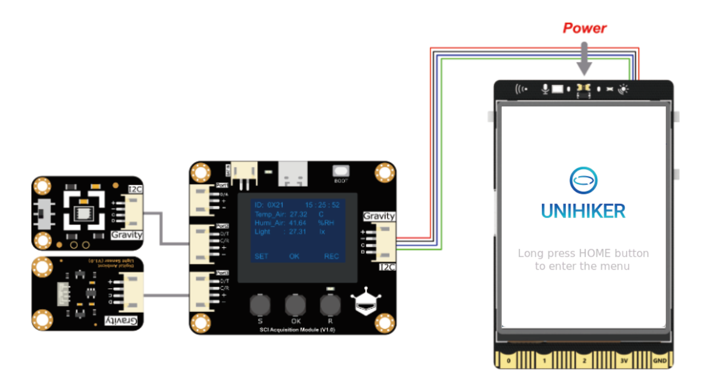

1- Introduction¶
The UNIHIKER is an innovative open-source hardware designed specifically for learning and using Python. It features a single-board computer architecture with an integrated LCD color screen, WiFi and Bluetooth, various commonly used sensors, and rich expansion interfaces. Additionally, it comes with a Linux operating system and Python environment pre-installed with commonly used Python libraries, which allows educators, students, or makers to step on a Python journey in just two simple steps.

2- Features¶
Supports running Python instead of MicroPython
Pre-installed Linux system, with ready-to-go Python and commonly-used libraries. Get started with Python in two steps
Multiple ways available for connecting, start coding at anytime anywhere
Highly-integrated hardware for teaching scenarios
Rich interfaces, excellent software compatibility & expandability
3- On-board Components¶
The UNIHIKER integrates commonly used components and provides rich external interfaces, which not only offer high convenience but also have unlimited expandability possibilities.

4- UNIHIKER System Framework¶
UNIHIKER adopts a PC and microcontroller dual-processor architecture. The CPU, memory, hard disk, screen, and peripherals constitute a computer system for running the Linux operating system. The microcontroller is responsible for controlling onboard components and external IO ports. The computer system controls the co-processor through the pinpong library.

5- Specification¶
Core
| Function | Description |
|---|---|
| CPU | RK3308 Arm 64-bit 4-core 1.2GHz |
| Memory | 512MB DDR3 |
| Hard Disk | 16GB eMMC |
| OS | debian 10 |
| Wi-Fi & Bluetooth | RTL8723DS 2.4G&4.0 |
| Co-processor | GD32VF103C8T6 RISC-V 108MHz & 64KB Flash & 32KB SRAM |
Onboard Components
| Function | Description |
|---|---|
| Button | Home, A/B |
| Screen | 2.8-inch touchscreen color display with 240x320 resolution |
| Microphone | Capacitive silicon microphone |
| Light sensor | PT0603 Photosensitive triode |
| Buzzer | Passive buzzer |
| LED | Blue LED |
| 6-axis Motion Sensor | 3-axis accelerator and 3-axis gyroscope (ICM20689) |
Interface
| Function | Description |
|---|---|
| USB Type-C | Connect CPU to a PC for coding; supply power for mainboard |
| USB TYPE-A | For connecting USB peripherals |
| Micro SD Socket | Expanding storage space |
| 3Pin I/O | Support 3 10-bit PWM and 2 12-bit ADC |
| 4Pin I2C | Independent I2C channel, not shared with onboard I2C components |
| Edge Connectors | Pin numbers are compatible with micro:bit, 19 independent I/O (Support 1 ×I2C, 1×UART, 2×SPI, 6×12-bit ADC, 5×10-bit PWM) |
Power Supply
| Function | Description |
|---|---|
| Power Supply | Type-C 5V Power supply (Note: It can only be powered by Type-C) |
| Operating Voltage | 3.3V |
| Max Operating Current | 2000mA |
6- Board Overview¶
The image shows the onboard components that are connected to the co-processor and demonstrates interface functions. Note: The edge connector on the back has no electrical connection.
7- Dimension¶
Key dimensions for the UNIHIKER. Unit: mm

8- SVG & 3D File¶
1- Front and back high-resolution SVG vector graphics for the UNIHIKER: Click to download

2- 3D STEP File for the UNIHIKER: Click to download

9- Technical Discussion¶
Community：EDUCATION Community
Discord：https://discord.gg/rvvfNCvBKv